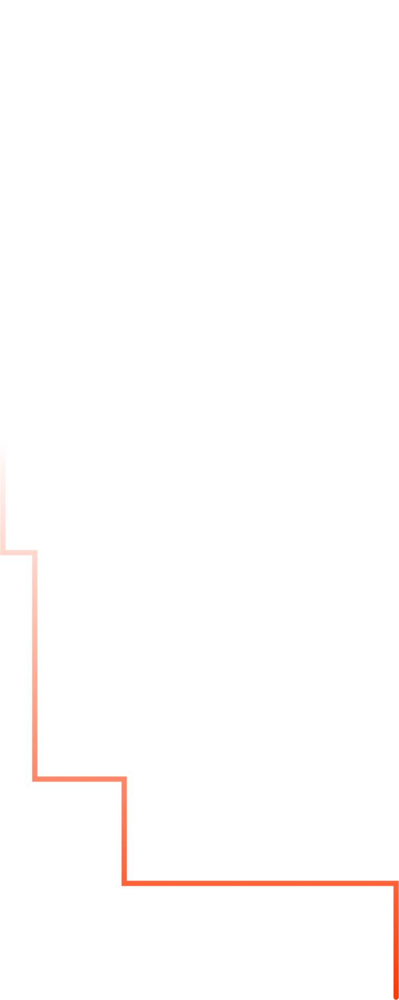
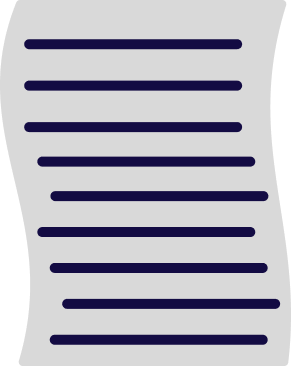
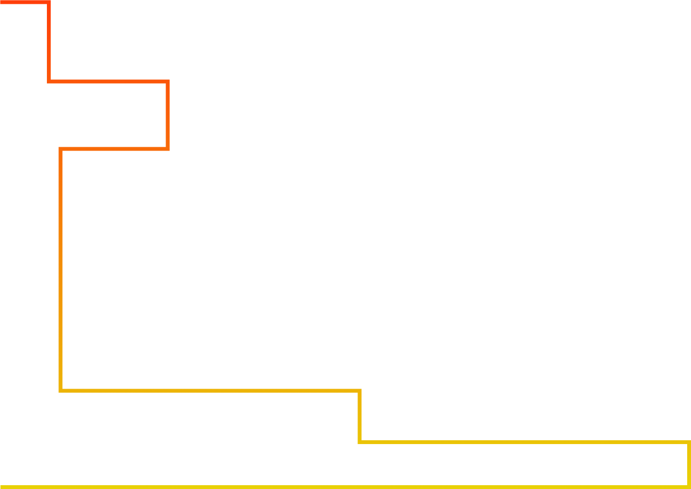

AIVA 
Artificial
Intelligence
Virtual Artist

AIVA es una inteligencia artificial especializada en la
AIVA es una inteligencia artificial especializada en la
composición musical, desarrollada por AIVA Technologies.
Desde su lanzamiento ha ganado notoriedad por su capacidad
para
componer música de manera autónoma, en géneros como:
¿Cómo funciona?
AIVA utiliza redes neuronales
profundas (Deep Learning) para su
funcionamiento.
Diseñadas para emular
el comportamiento del cerebro humano,
esencial para:
identificación de estilos
reproducción de piezas complejas


Emplea redes neuronales
profundas para analizar
grandes volúmenes de datos
musicales.
profundas para analizar
grandes volúmenes de datos
musicales.
Descompone las
composiciones en
sus componentes básicos:

Melodías
Armonías
Ritmos
para reconocer
patrones comunes

Una vez que AIVA ha aprendido estos patrones, los aplica en crear nuevas composiciones.

La creación se basa
en el entrenamiento
en una gran base de datos
de partituras y música digital

Ahora que ya sabes